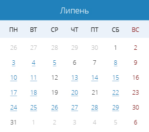
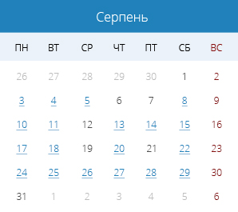
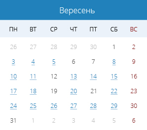
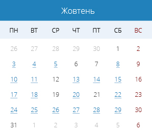
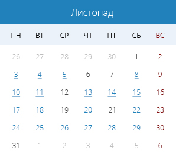
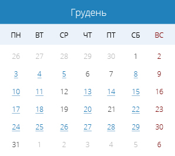

Законотворчість
Законопроекти
(current)
Пошук за реквізитами
Правила оформлення проектів...
Зареєстровані за поточний тиждень
Надано народним депутатам
Знаходяться на розгляді в комітетах
Прийнято на поточні сесії
Пленарні засідання
Action
Another action
Something else here
Парламентські слухання
Action
Another action
Something else here
Головна
Надано народним депутатам
Інформаційні листи
про зареєстровані законопроекти, які направлені до комітетів Верховної Ради України за період з 01.07.2018 року по 31.12.2018 року
     
‹
1
2
3
...
10
20
30
›